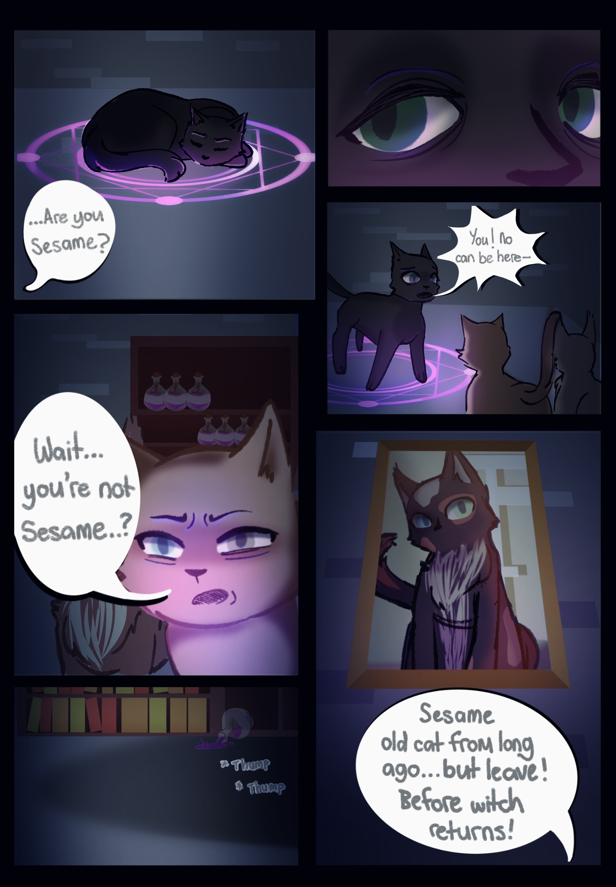

The room is more spacious than you thought the further you walk in; in the centre is a small cauldron, surrounded by dark vases each holding components ranging from dried up herbs to marinated liquids; ingredients maybe, you think. Above the cauldron stands a podium propping up an open book. When you look inside, most of the information is redacted. You both continue searching around when suddenly you hear a racketing sound. A crack of light in the room highlights an iridescent barrier, with a black cat trapped behind it. It's laying still, almost like a statue. Wedged in between the cage seems to be another one of the torn sheets of paper?

The torn page cuts off. It's got details of the case you're on, meaning the previous detective must have written this and left it here for the next person. Then something clicks and you stare closely at the small cat you met upon first waking up; Charlie was one of the victims from the case file. 'Sesame', however, you wonder who that could refer to. You mentally scan the room for answers until you notice the wall is covered in photos of a small, fluffy black cat, with calico spots and two-coloured eyes. Despite the room seemingly prone to dust, they're oddly polished, and arranged in a directional line that your eyes follow to a corner where a dimly lit magic circle encapsulates a black cat laying curled up into a ball: